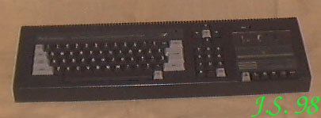
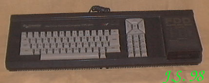
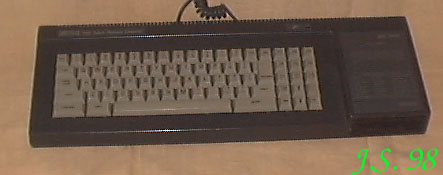

AMSTRAD / SCHNEIDER
Na takich maszynkach szkoli³y siê "druciki" w Zegrzu.
Sprowadza³a je Polanglia Ltd, a w serwisie "liczy³ siê tylko REFLEKS"...
Amstrad by³ elegant,
za czêsto chodzi³ do drogiego krawca ;o) i na rynku pojawi³ siê Schneider.
Oczywi¶cie ze
zmienionymi z³±czami, ¿eby amstradowskie peryferia nie pasowa³y. Taki
obowi±zywa³ "trend". W "Bajtku" mia³ Amstrad / Schneider swój w³asny k±cik. Ale
kto pamiêta jeszcze "Bajtka"?...
CPC 464

Procesor Z80 / 4MHz
RAM 64kB
ROM 32kB
Procesor graficzny (CRTC) 6845
Rozdzielczo¶æ maksymalna 640 X 200
Grafika 16 - kolorowa przy rozdzielczo¶ci 200 X 160
Tryby tekstowe 80, 40 lub 20 kolumn w 25 wierszach
Wyj¶cie video monochrome / RGB
Porty: User, Printer, Floppy disc, monitor
Wbudowany magnetofon, port do do³±czenia zewnêtrznego kontrolera
FDD
D¼wiêk: trzykana³owy generator AY-3-8912, wzmacniacz, wewnêtrzny
g³o¶nik, regulacja natê¿enia.
CPC 664

Parametry jak w CPC 464, wbudowany jednostronny napêd 3-calowy z
kontrolerem uPD765.
ROM powiêkszony do 48kB.
CPC 6128

Parametry - jak w CPC 664. 128kB RAM.
|